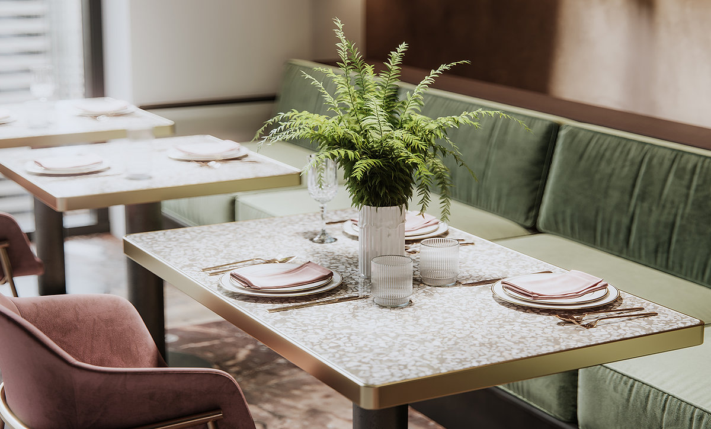

Cauliflower, Brown Rice, and Vegetable Fried Rice
Cauliflower, Brown Rice, and Vegetable Fried Rice might be a good recipe to expand your side dish recipe box. Watching your figure? This gluten free, dairy free, lacto ovo vegetarian, and vegan recipe has 192 calories, 7g of protein, and 6g of fat per serving. For $1.12 per serving, this recipe covers 19% of your daily requirements of vitamins and minerals. This recipe serves 8. This recipe from fullbellysisters.blogspot.com has 3689 fans. This recipe is typical of Chinese cuisine. From preparation to the plate, this recipe takes about 30 minutes. Head to the store and pick up peas, broccoli, salt, and a few other things to make it today.
Cook: 10 mins
Additional: 7 hrs
Total: 7 hrs 25 mins
Prep: 15 mins
Servings: 5

- 3/4 cup soy sauce
- 3/4 cup water
- 3 tablespoons white vinegar
- 3/4 cup soy sauce
- 3/4 cup water
- 3 tablespoons white vinegar
- No Frills: $3.99
- Loblaws: $3.99
- No Frills: $7.99
- Freshco: $2.99
- No Frills: $3.99
- Pour soy sauce, water, vinegar, and sesame oil into a large, non-metallic bowl. Whisk in onion, garlic, brown sugar, white sugar, and pepper, whisking until sugars dissolve. Submerge ribs in the marinade. Cover the bowl and refrigerate 7 to 12 hours; the longer, the better.
- Preheat an outdoor grill for medium-high heat.
- Remove ribs from marinade and shake off excess; discard marinade.
- Cook on the preheated grill until the meat is no longer pink, 5 to 7 minutes per side.